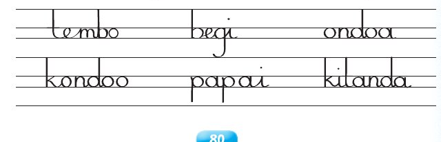

Somo la tatu: Kuandika maneno kwa mwandiko wa kuunga
Somo la tatu
Kuandika maneno kwa mwandiko wa kuunga
Katika somo hili utajifunza kuandika maneno kwa
mwandiko wa kuunga.
Nakili maneno haya kwa mwandiko wa kuunga.

Andika jibu kwa mkono katika sehemu hii.